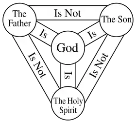
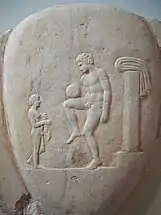
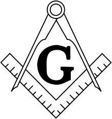

Religion Related Myths
What/Who Is Lilith?

LilithPainting By John
Collier
Lilith is a demonic figure. She is first mentioned in Biblical Hebrew in
Isaiah 34:14, and later in Late Antiquity in Mandaean Gnosticism mythology and Jewish mythology sources from
500 AD onwards. Lilith appears
in historiolas (incantations incorporating a short mythic story) in various concepts and localities that
give partial descriptions of her. She is mentioned in the Babylonian Talmud (Eruvin 100b, Niddah 24b,
Shabbat 151b, Baba Bathra 73a),
in The Book of Adam and Eve as Adam's first wife, and in the Zohar Leviticus 19a as "a hot fiery female who
first cohabited with man ".
Lilith perhaps originated from an earlier class of female demons (lilû,
lilîtu, and (w)ardat lilî)
in the ancient Mesopotamian religion, found in cuneiform texts of Sumer, Assyria, and Babylonia. Lilith
continues to serve as source material in modern Western culture, literature, occultism, fantasy, and
horror.
History Of Lilith
In some Jewish folklore, such as the satiric Alphabet of Sirach (c. AD
700–1000), Lilith appears as Adam's first wife, who was created at the same time (Rosh Hashanah) and from
the same clay as Adam – compare Genesis
1:27 ( this contrasts with Eve, who was created from one of Adam's ribs: Genesis 2:22). The legend of Lilith
developed extensively during the Middle Ages, in the tradition of Aggadah, the Zohar, and Jewish mysticism.
For example, in the 11th-century
writings of Isaac ben Jacob ha-Cohen, Lilith left Adam after she refused to become subservient to him and
then would not return to the Garden of Eden after she had coupled with the archangel Samael. Interpretations
of Lilith found in later
Jewish materials are plentiful, but little information has survived relating to the Sumerian, Akkadian,
Assyrian and Babylonian view of this class of demons. While researchers almost universally agree that a
connection exists, recent scholarship
has disputed the relevance of two sources previously used to connect the Jewish lilith to an Akkadian lilītu
– the Gilgamesh appendix and the Arslan Tash amulets. (see below for discussion of these two problematic
sources) "Other scholars,
such as Lowell K. Handy, agree that Lilith derives from Mesopotamian demons but argue against finding
evidence of the Hebrew Lilith in many of the epigraphical and artifactual sources frequently cited as such
(e.g., the Sumerian Gilgamesh
fragment, the Sumerian incantation from Arshlan-Tash). ":174 In Hebrew-language texts, the term lilith or
lilit (translated as "night creatures ", "night monster ", "night hag ", or "screech owl ") first occurs in
a list of animals in Isaiah
34:14, either in singular or plural form according to variations in the earliest manuscripts. The Isaiah
34:14 Lilith reference does not appear in most common Bible translations such as KJV and NIV. Commentators
and interpreters often envision
the figure of Lilith as a dangerous demon of the night, who is sexually wanton, and who steals babies in the
darkness. In the Dead Sea Scrolls 4Q510-511, the term first occurs in a list of monsters. Jewish magical
inscriptions on bowls and
amulets from the 6th century AD onwards identify Lilith as a female demon and provide the first visual
depictions of her.
Source(wikipedia)
Who Is Jesus Christ?

Trinitybelief in
Christianity
NB: THE CONTENTS OF THIS POST WERE DERIVED FROM THE BIBLE
This post is trying to give the meaning of who Jesus is
A clarification of the book of John by Mythologer.
Talking to a fish
Imagine that you wanted to talk to a fish... U simply couldn't! Because you are not a fish. The best way was
to turn yourself into a fish!
That's exactly what God did... He new it could be difficult for us to talk to Him..so he found a way...
that's by becoming one of us! Through Jesus....
May the Good Lord help you understand what is in the document.
Look at the verses below and read very carefully...
they're from the book of John the baptist
The Word Became Flesh
verse:1 In the beginning was the Word, and the Word was with God, and the Word was God. verse:2 He was with
God in the beginning. verse:3 Through him all things were made; without him nothing was made that has been
made. verse:4 In him was life, and that life was the light of all mankind. verse:5 The light shines in the
darkness, and the darkness has not overcome it.
(Who do you think this word is? Let's proceed...)
verse:6 There was a man sent from God whose name was John.verse:7 He came as a witness to testify concerning
that light, so that through him all might believe. verse:8 He himself was not the light; he came only as a
witness to the light.
verse:9 The true light that gives light to everyone was coming into the world. verse:10 He was in the world,
and though the world was made through him, the world did not recognize him.verse:11 He came to that which
was his own, but his own did not receive him. verse:12 Yet to all who did receive him, to those who believed
in his name, he gave the right to become children of God— verse:13 children born not of natural descent, nor
of human decision or a husband’s will, but born of God.
verse:14 The Word became flesh and made his dwelling among us. We have seen his glory, the glory of the one
and only Son, who came from the Father, full of grace and truth.
~(There comes the revelation)~
verse:15 (John testified concerning him. He cried out, saying, “This is the one I spoke about when I said,
‘He who comes after me has surpassed me because he was before me.’”) verse:16 Out of his fullness we have
all received grace in place of grace already given. verse:17 For the law was given through Moses; grace and
truth came through Jesus Christ. verse:18 No one has ever seen God, but the one and only Son, who is himself
God and is in closest relationship with the Father, has made him known.
according to this explanation the word was Jesus.
that is If you agree go to verse 1 which says "Word was God."
This means Jesus is definitely God!
Where do we get the concept that the word is Jesus?
Read verse 14 it says "The Word became flesh and made his dwelling among us. We have seen his glory, the
glory of the one and only Son, who came from the Father, full of grace and truth."
Now which son was the word? As per extract above? Look at verse 15 it says "(John testified concerning him.
He cried out, saying, “This is the one I spoke about when I said, ‘He who comes after me has surpassed me
because he was before me.’”)"
But still u may ask that who is this one that John was talking about? Do not stress just read the same
chapter of John 1 but now go to v 29 it says "29 The next day John saw Jesus coming toward him and said,
“Look, the Lamb of God, who takes away the sin of the world!30 This is the one I meant when I said, ‘A man
who comes after me has surpassed me because he was before me.’ "
Now answer these questions
Q1. Who is the word?
✓answer is Jesus!
Q2. Who is Jesus?
✓the answer is God
What do u say when you see sunrays?
Many people say they've seen the sun😊😊 but in fact we just see
the sun rays not the sun itself... So Jesus is like the Ray of God... God Ray....
Thanks for reading this document.
May the Good Lord help you understand what is in this post, glory be to him forever and ever!.
~Compiled and clarified by Mythologer~
Should We Stop Watching Football?

Footballold painting
Some few days ago I was somewhere working with my fellas, and one of my friends said he stopped watching
football claiming its driven by satanic, this raised a very massive debate amongst us, so here are some
highlights that I think are important
for us to note if ever we find our selves in such kinds of situations.
History of Soccer
Kicking ball games arose independently multiple times across multiple
cultures. According to FIFA, the Chinese competitive game cuju (蹴鞠, literally "kick ball") is the earliest
form of football for which there is
evidence. Cujuplayers could use any part of the body apart from hands and the intent was kicking a ball
through an opening into a net. It was remarkably similar to modern football, though similarities to rugby
occurred. During the Han Dynasty
(206 BCE – 220 CE), cuju games were standardised and rules were established. Football in itself does not
have a classical history. Notwithstanding any similarities to other ball games played around the world FIFA
has recognised that no historical
connection exists with any game played in antiquity outside Europe. The modern rules of football are based
on the mid-19th century efforts to standardise the widely varying forms of football played in the public
schools of England. The history
of football in England dates back to at least the eighth century CE. Though the rules of football had
largely been standardised by the early 1880s, the UK's four football associations still each had slightly
different rules. This posed a problem
with international matches and when matches were played, the rules of the home team's national association
were used. While this solution was workable, it was hardly ideal. To remedy this, the then football
associations of England, Wales,
Scotland and Ireland met at the International Football Conference on 6 December 1882 in Manchester, in order
to set forth a common set of rules that could be applied to matches between the UK football associations'
national teams. In the summer
of 1885, the English FA legalized professionalism. The Scottish FA responded that it would refuse to allow
professionals in its own national team, and would refuse to play international matches against an England
team containing professionals.The
Irish FA attempted to mediate by proposing that "an international conference should be held each year, say,
in August, to be called in turn by each national association to deal with the laws of the game, and discuss
other matters of interest
to Association football, and at which international disputes could be adjusted". The first meeting of IFAB
took place at the FA's offices at Holborn Viaduct in London on Wednesday 2 June 1886. The FA, SFA, FAW and
IFA each had equal voting
rights. Fédération Internationale de Football Association (FIFA), the international organising body for the
sport, was formed in Parisin 1904 and declared that, regarding the Laws of the Game itself, they would
enforce the rules laid down
by IFAB. In 1912, FIFA requested that its representatives be included in IFAB. At a special meeting held in
January 1913 in Wrexham, IFAB agreed to FIFA's request. The first regular IFAB meeting to include FIFA
occurred in June 1913. Each
association (including FIFA) was entitled to send two representatives, with a four-fifths majority required
to change the laws (thus that the UK associations could still change the laws against FIFA's wishes if they
all voted together). One
more meeting of IFAB was held, in Paris in 1914, before regular meetings were curtailed by the First World
War. For the first four post-war IFAB meetings (1920, 1921, 1922, and 1923), FIFA was once again excluded,
on account of a dispute between
FIFA and the home nations. From 1924, once the dispute had been resolved, FIFA once again attended IFAB
meetings. In 1958, the Board agreed on its current voting system. Since Irish partition in 1921, the IFA has
evolved to become the organising
body for football in Northern Ireland, with football in the Republic of Ireland being organised by the FAI.
A request for the FAI to become a member of IFAB was denied at the 1923 annual general meeting. NB: The
Football Association (The FA)
first met on the morning of 26 October 1863 at the Freemasons' Tavern in Great Queen Street, London.
What Is A Freemason Tavern?
This Is An Old Building that was established in 1775 at 61-65 Great Queen Street in the West End of
London. It served as a meeting place for a variety of notable organisations (including the Freemasons)
from the eighteenth century until it
was demolished in 1909 to make way for the Connaught Rooms.
Connecting the Dots
Lets Take note that the freemasons, used this building as their conference room on those days, and
the building was called the Freemasons' Tavern which somehow makes sense that the building was
literary theirs.
What are the Freemasons?

Freemasonsymbol
Freemasonry or Masonry consists of fraternal organisations that trace their origins to the local
fraternities of stonemasonsthat from the end of the 14th century regulated the qualifications of
stonemasons and their interaction with authorities
and clients. Freemasonry has been the subject of numerous conspiracy theories throughout the years
Freemasonry has attracted criticism from theocratic states and organised religions for supposed
competition with religion, or supposed
heterodoxy within the fraternity itself and has long been the target of conspiracy theories, which
assert Freemasonry to be an occult and evil power.( Morris, S. Brent; The Complete Idiot's Guide to
Freemasonry, Alpha books, 2006,
p. 204) According to Hanegraaff, "the occult" is a category into which gets placed a range of
beliefs from "spirits or fairies to parapsychological experiments, from UFO-abductions to Oriental
mysticism, from vampire legends to channelling,
and so on(Hanegraaff 2006 p 888)
What is A Vampire?

VampireCostume
It is difficult to make a single, definitive description of a vampire, though there are several
elements common to many European legends. Vampires were usually reported as bloated in appearance,
and ruddy, purplish, or dark in colour; these characteristics
were often attributed to the recent drinking of blood. Blood was often seen seeping from the mouth
and nose when one was seen in its shroud or coffin and its left eye was often open. It would be clad
in the linen shroud it was buried
in, and its teeth, hair, and nails may have grown somewhat, though in general fangs were not a
feature. Although vampires were generally described as undead, some folk tales spoke of them as
living beings.( Dundes, Alan (ed) (1998)
The Vampire: A Casebook University of Wisconsin Press ISBN 0-299-15924-8 pg 13, 14, 22, 52)
Origin of Vampires
Tales of supernatural beings consuming the blood or flesh of the living have been found in nearly
every culture around the world for many centuries. The term vampire did not exist in ancient times.
Blood drinking and similar activities were attributed
to demons or spirits who would eat flesh and drink blood; even the devil was considered synonymous
with the vampire. Almost every nation has associated blood drinking with some kind of revenant or
demon, or in some cases a deity. In
India, for example, tales of vetālas, ghoulish beings that inhabit corpses, have been compiled in
the Baitāl Pacīsī; a prominent story in the Kathāsaritsāgara tells of King Vikramāditya and his
nightly quests to capture an elusive
one. Piśāca, the returned spirits of evil-doers or those who died insane, also bear vampiric
attributes. The Persians were one of the first civilizations to have tales of blood-drinking demons:
creatures attempting to drink blood from
men were depicted on excavated pottery shards. Ancient Babyloniaand Assyria had tales of the
mythical Lilitu, synonymous with and giving rise to Lilith (Hebrew לילית) and her daughters the Lilu
from Hebrew demonology. Lilitu was considered
a demon and was often depicted as subsisting on the blood of babies, and estries, female
shapeshifting, blood-drinking demons, were said to roam the night among the population, seeking
victims. According to Sefer Hasidim, estries were
creatures created in the twilight hours before God rested. An injured estrie could be healed by
eating bread and salt given to her by her attacker. Greco-Roman mythology described the Empusae, the
Lamia, the Mormo and the striges.
Over time the first two terms became general words to describe witches and demons respectively.
Empusa was the daughter of the goddess Hecateand was described as a demonic, bronze-footed creature.
She feasted on blood by transforming
into a young woman and seduced men as they slept before drinking their blood. The Lamia preyed on
young children in their beds at night, sucking their blood, as did the gelloudes or Gello. Like the
Lamia, the striges feasted on children,
but also preyed on adults. They were described as having the bodies of crows or birds in general,
and were later incorporated into Roman mythology as strix, a kind of nocturnal bird that fed on
human flesh and blood.
Points to Note
1. It may or may not be true that football was invented by satanic, the facts of which are myths
2. The Possibility of Football Being Linked by Satanism Exists as Evidenced by Its Being Linked
to Freemasonry which is linked to
satanism
3. A lot of other things may or may not be linked to satanism, including clothes, mobile
phones, television sets, cars, money, religion and literally everything on the earth as Christians
believe that this world is being ruled
by Satan
To Conclude, Should you stop watching Football?
According to my own opinions any decision you make may be reasonable in a way, but if you choose to
stop watching soccer because of it being believed to be satanic driven, then you must make sure that
u disconnect yourself from almost everything as everything
is believed to be connected to satanism, as a person who fears God though, I encourage you to Follow
The Commandments of God and you practice love as much as you can as that will benefit u greatly in
the great beyond to come, and read
the bible as it has all the Answers to questions in this modern life other than disconnecting
yourself from the world and depriving yourself off al the things you can hardly live without. Thanks
for Reading
Most Of This Content Has Been Sourced From(wikipedia)